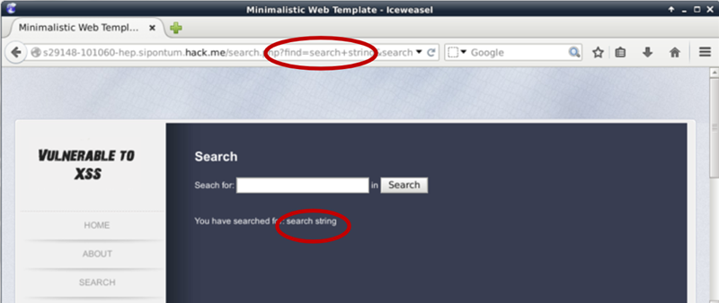

Para encontrar un XSS tenemos que mirar todo el user input y probar y mirar si sale en algun parte de la pagina

En este ejemplo, el prametro de search es sometido mediante un form y si refleja en el output(Reflection point)
Hay que tomar en cuenta que el search string lo pasa al web app mediente un GET

Despues de encontrar un reflection point,tenemos que entender si podemos injectar codifo de HTML y ver si de alguna manera se ensena en el output de la pagina
Podemos usar cualquier valido HTML tag para tratar de entenderlo y ver si llega a la pagina
Mirar el source de la pagina ayuda ver como hacer un payload para el XXS
Muchas veces es solo injectar cualquier codifo HTML que no se danino como
<i>, <pre> o <plaintext>

En este ejemplo con tan solo injectar <i> tag y el test string esta en italic en el output,asi que codigo HTML fue interpretado

Para probar el XXS,Podemos injectar un codigo valido de HTML/Javacript code como

Para atacar la vulnerabilidad de XXS que encontramos,Necesitamos saber el tipo de XXS estamos haciendo.
XXS pueden ser- Reflected
- Persistent
- DOM Based